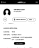
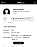
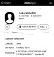

Aldilàpp - Terni
Media









×
❮
❯


1/13 - Aldilapp_Belloni_Stefano
2/13 - Aldilapp_Vaccarini_Agostina
3/13 - Aldilapp_Ortenzi_Luigi
4/13 - Aldilapp_Ortenzi_Francesco
5/13 - Aldilapp_Ortenzi_Amabilia
6/13 - Aldilapp_Meloni_Mario
7/13 - Aldilapp_Martinelli_Ester
8/13 - Aldilapp_Caproni_Iolanda
9/13 - Aldilapp_Camilluzzi_Luigi
10/13 - Aldilapp_Camilluzzi_Giulio
11/13 - Aldilapp_Zara_Fausto
13/13 - Aldilapp_Zara_Odoardo
References
-
- Death, Vaccarini, Agostina (Eugenia)
- 5 SEZIONE - P-20 PADIGLIONE 20° LOCULO COMUNALE - Loculo 652
- Death, Zara, Giovanni
- Burial, Zara, Giovanni
- Birth, Zara, Fausto
- Death, Ortenzi, Amabilia
- Death, Meloni, Mario
- Zara, Giovanni
- Vaccarini, Agostina (Eugenia)
- Ortenzi, Amabilia
- Caproni, Iolanda
- Zara, Fausto
- Meloni, Mario
- Birth, Caproni, Iolanda
- Death, Camilluzzi, Luigi
- Death, Martinelli, Ester
- Birth, Belloni, Stefano
- Martinelli, Ester
- Belloni, Stefano
- Ortenzi, Francesco
- Camilluzzi, Luigi
- Birth, Zara, Giovanni
- Death, Zara, Fausto
- Death, Ortenzi, Luigi
- 5 SEZIONE - P-20 PADIGLIONE 20° LOCULO COMUNALE - Loculo 747
- Death, Belloni, Stefano
- Burial, Zara, Fausto
- Birth, Meloni, Mario
- Ortenzi, Luigi
- Burial, Zara, Odoardo
- Birth, Ortenzi, Amabilia
- Cappella di Famiglia Camilluzzi Luigi, Cimitero di Terni, Terni, Umbria
- Death, Caproni, Iolanda
- Birth, Ortenzi, Francesco
- Zara, Odoardo
- Death, Ortenzi, Francesco
- Death, Zara, Odoardo